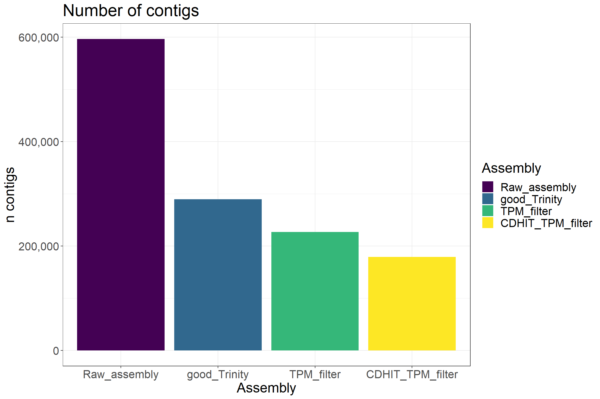
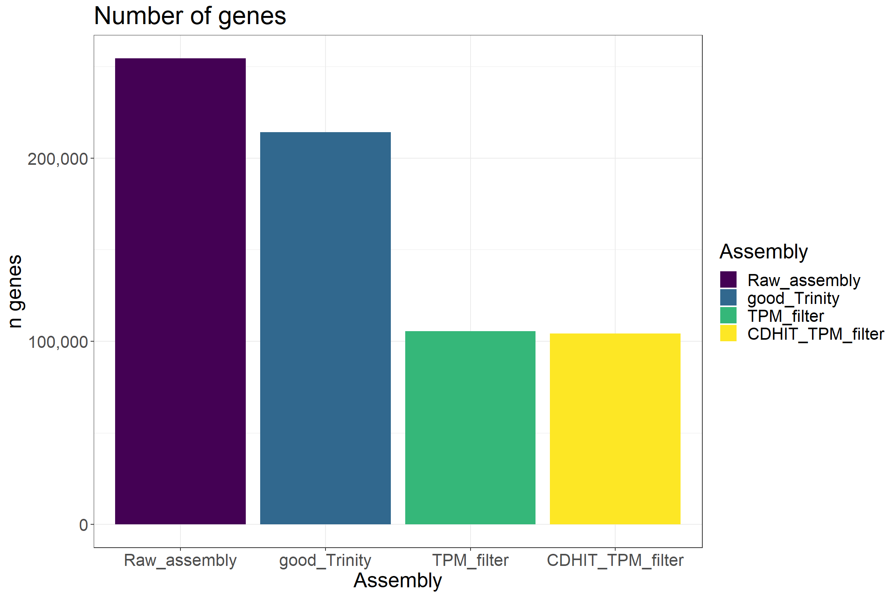
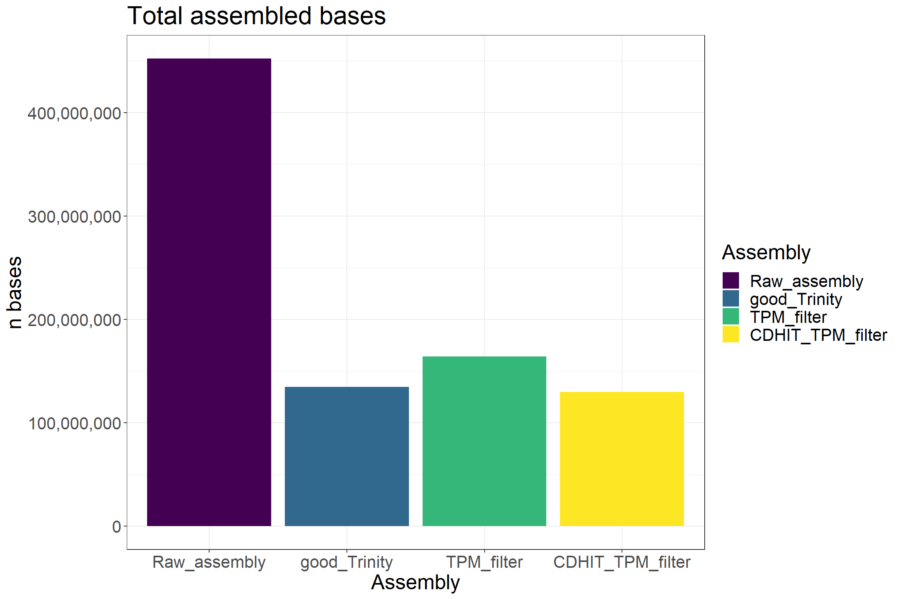
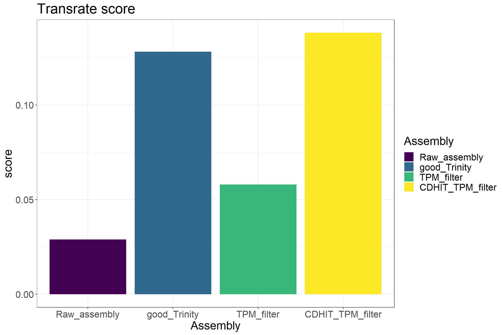
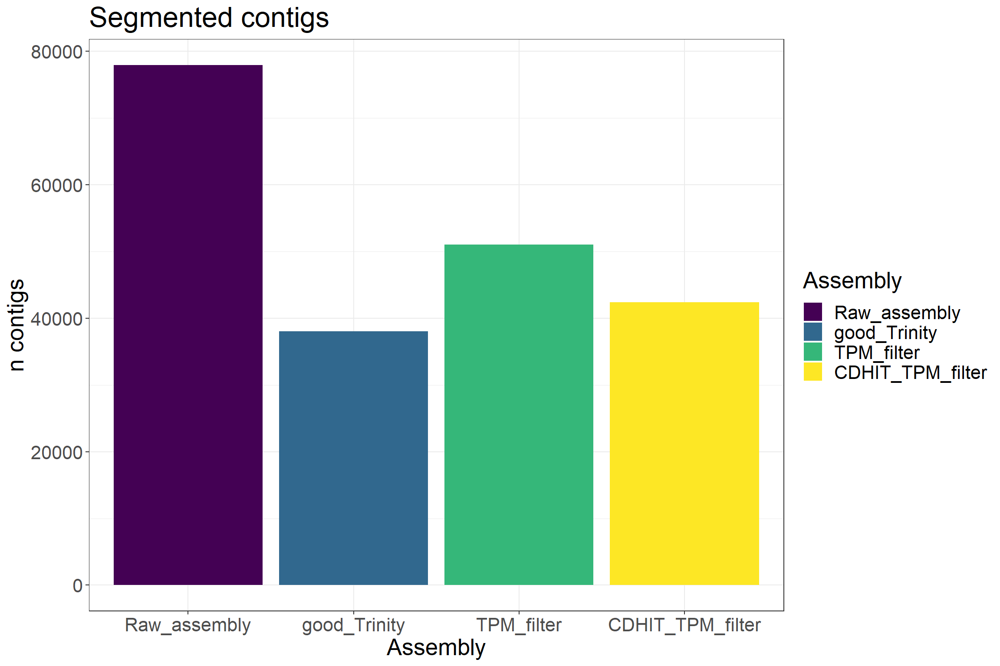
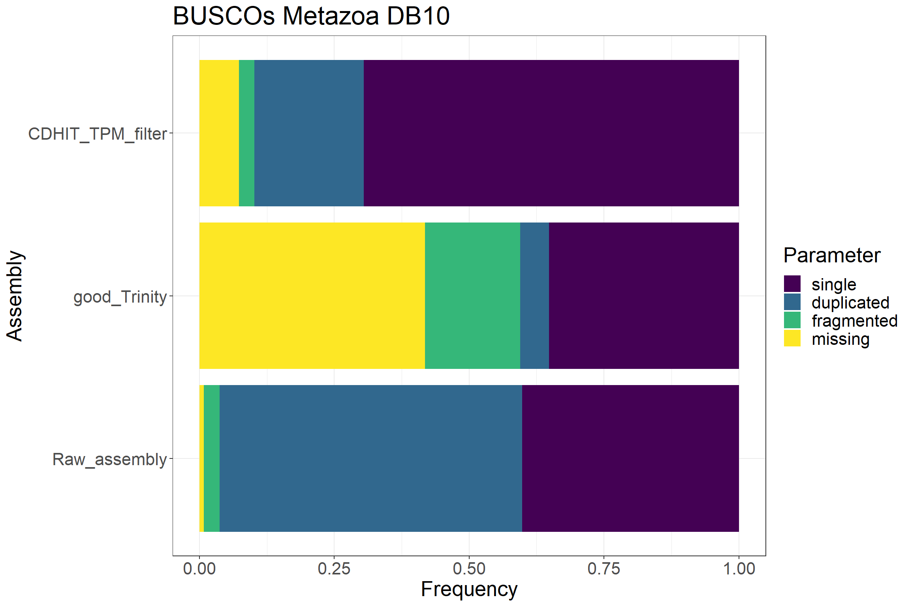
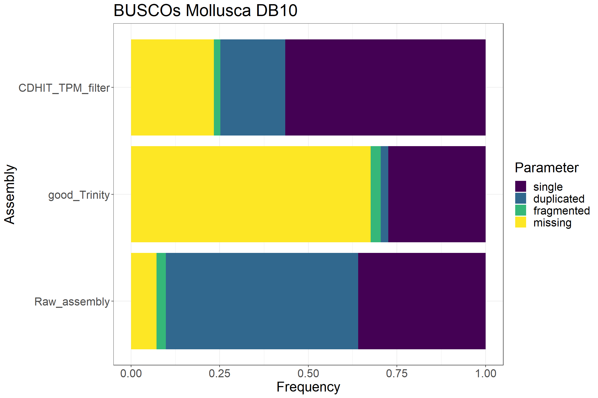

Last updated: 2020-11-22
Checks: 7 0
Knit directory: RGhybrid/
This reproducible R Markdown analysis was created with workflowr (version 1.6.2). The Checks tab describes the reproducibility checks that were applied when the results were created. The Past versions tab lists the development history.
Great! Since the R Markdown file has been committed to the Git repository, you know the exact version of the code that produced these results.
Great job! The global environment was empty. Objects defined in the global environment can affect the analysis in your R Markdown file in unknown ways. For reproduciblity it’s best to always run the code in an empty environment.
The command set.seed(20201122) was run prior to running the code in the R Markdown file. Setting a seed ensures that any results that rely on randomness, e.g. subsampling or permutations, are reproducible.
Great job! Recording the operating system, R version, and package versions is critical for reproducibility.
Nice! There were no cached chunks for this analysis, so you can be confident that you successfully produced the results during this run.
Great job! Using relative paths to the files within your workflowr project makes it easier to run your code on other machines.
Great! You are using Git for version control. Tracking code development and connecting the code version to the results is critical for reproducibility.
The results in this page were generated with repository version 3b34742. See the Past versions tab to see a history of the changes made to the R Markdown and HTML files.
Note that you need to be careful to ensure that all relevant files for the analysis have been committed to Git prior to generating the results (you can use wflow_publish or wflow_git_commit). workflowr only checks the R Markdown file, but you know if there are other scripts or data files that it depends on. Below is the status of the Git repository when the results were generated:
Ignored files:
Ignored: .Rproj.user/
Untracked files:
Untracked: data/Filtered_assembly_stats.csv
Note that any generated files, e.g. HTML, png, CSS, etc., are not included in this status report because it is ok for generated content to have uncommitted changes.
These are the previous versions of the repository in which changes were made to the R Markdown (analysis/first-analysis.Rmd) and HTML (docs/first-analysis.html) files. If you’ve configured a remote Git repository (see ?wflow_git_remote), click on the hyperlinks in the table below to view the files as they were in that past version.
| File | Version | Author | Date | Message |
|---|---|---|---|---|
| html | 5320a9e | Miguel Tripp | 2020-11-22 | Build site. |
| Rmd | b80c56f | Miguel Tripp | 2020-11-22 | Add my first analysis |
Texto texto texto
In this document, we describe the steps for filtering the de novo assembly from pure red (Haliotis rufescens; RR) and hybrid abalone (Haliotis rufescens x Haliotis fulgens;RG).
| Group | Sample | Library F | Library R |
|---|---|---|---|
| RAZ_UN | RAZ_UN_rep1 | Trimmed_RAZ8_10_S43_L002_1P.fastq | Trimmed_RAZ8_10_S43_L002_2P.fastq |
| RAZ_UN | RAZ_UN_rep2 | Trimmed_RAZ11_13_S0_L009_1P.fastq | Trimmed_RAZ11_13_S0_L009_2P.fastq |
| RAZ_UN | RAZ_UN_rep3 | Trimmed_RAZ14_16_S0_L009_1P.fastq | Trimmed_RAZ14_16_S0_L009_2P.fastq |
| RAZ_M | RAZ_M_rep1 | Trimmed_RAZ26_28_S46_L002_1P.fastq | Trimmed_RAZ26_28_S46_L002_2P.fastq |
| RAZ_M | RAZ_M_rep2 | Trimmed_RAZ29_30_S47_L002_1P.fastq | Trimmed_RAZ29_30_S47_L002_2P.fastq |
| RAZ_M | RAZ_M_rep3 | Trimmed_RAZ31_32_S0_L009_1P.fastq | Trimmed_RAZ31_32_S0_L009_2P.fastq |
| RR_M | RR_M_rep1 | Trimmed_RR51_53_S0_L009_1P.fastq | Trimmed_RR51_53_S0_L009_2P.fastq |
| RR_M | RR_M_rep2 | Trimmed_RR54_56_S50_L002_1P.fastq | Trimmed_RR54_56_S50_L002_2P.fastq |
| RR_M | RR_M_rep3 | Trimmed_RR57_59_S51_L002_1P.fastq | Trimmed_RR57_59_S51_L002_2P.fastq |
| RR_UN | RR_UN_rep1 | Trimmed_RR87_89_S0_L009_1P.fastq | Trimmed_RR87_89_S0_L009_2P.fastq |
| RR_UN | RR_UN_rep2 | Trimmed_RR90_92_S53_L002_1P.fastq | Trimmed_RR90_92_S53_L002_2P.fastq |
| RR_UN | RR_UN_rep3 | Trimmed_RR93_95_S0_L009_1P.fastq | Trimmed_RR93_95_S0_L009_2P.fastq |
For the de novo assembly, we used Trinity v 2.4.0 including all RR and RG libraries. We used the dafult parameters except the no_bowtie option.
Filtering steps were as follows:
The resulting assembly (CDHIT_TPM_filter) was compared with the following:



Is the he number of contigs that contain at least one base with no read coverage
The assembly score allows you to compare two or more assemblies made with the same reads. The score is designed so that an increased score is very likely to correspond to an assembly that is more biologically accurate1.

Is the number of contigs that have >=50% estimated chance of being segmented

BUSCO uses sequence profiles embedded in lineage-specific datasets to assess the orthology status of predicted genes in the species under analysis. These consensus sequences are derived from Hidden Markov Model (HMM) profiles built from multiple sequence alignments of orthologs selected from OrthoDB and capture the conserved alignable amino acids across the species set, reducing any potential species bias that would result from pairwise alignments toward original sequences2. BUSCO produces a report for each of the three modes of assessment using the same scoring scheme. Expected BUSCO genes can fall into different categories: C:complete [S:single-copy, D:duplicated], F:fragmented, and M:missing. These are reported as absolute numbers as well as percentage of the total BUSCO genes (n:) included in the dataset. To judge whether a score is satisfying, the user will have to consider the type of sequence first. A very good genome assembly should contain all BUSCO genes that were not lost during the evolution of the species, which cannot be precisely defined.
Non-model genome projects commonly report BUSCO scores ranging from 50% up to 95% complete, depending on the challenge posed by the species’ biology (e.g., genome size, amount of repetitive elements) and its taxonomic position.
The duplication of a few BUSCO genes in a genome is compatible with a biological reality, as their evolution under single copy may be relaxed in some sublineages and the fact that we allowed duplications in up to 10% of the species when defining BUSCO markers [7]. However, a high duplication rate in a genome could denote a potential assembly of different haplotypes, a recent whole genome duplication [20], or technical artifacts that will have to be investigated. As mentioned earlier, the duplication rate of transcriptomes and annotated gene sets unfiltered for isoforms may be considerably higher. In some situation, the user will want to filter these out to decrease the duplication rate down to values expected in a genome. A high rate of fragmented BUSCO genes indicates issues in the sequencing and assembly process or the inability of the annotation pipeline to fully capture the complexity of some gene models. Turning fragmented BUSCO genes into complete is a good indicator of a significant improvement of the quality of an assembly, especially when supported by changes in other metrics such as N50.


Results from BUSCO demonstrate that keeping the “good contings” only, from using Transrate, results in a higher score but the number of BUSCOs is being reduced considerably. By using the TPM > 1 and CD-HIT, the assembly score is also high but the number of missing BUSCOs is lower and the number of duplicated BUSCOs is reduced compared to the raw assembly.
sessionInfo()R version 4.0.0 (2020-04-24)
Platform: x86_64-w64-mingw32/x64 (64-bit)
Running under: Windows 10 x64 (build 19041)
Matrix products: default
locale:
[1] LC_COLLATE=English_United States.1252
[2] LC_CTYPE=English_United States.1252
[3] LC_MONETARY=English_United States.1252
[4] LC_NUMERIC=C
[5] LC_TIME=English_United States.1252
attached base packages:
[1] stats graphics grDevices utils datasets methods base
other attached packages:
[1] viridis_0.5.1 viridisLite_0.3.0 gplots_3.0.3 forcats_0.5.0
[5] stringr_1.4.0 dplyr_1.0.0 purrr_0.3.4 readr_1.3.1
[9] tidyr_1.1.0 tibble_3.0.1 ggplot2_3.3.1 tidyverse_1.3.0
[13] workflowr_1.6.2
loaded via a namespace (and not attached):
[1] Rcpp_1.0.4.6 lubridate_1.7.8 lattice_0.20-41 gtools_3.8.2
[5] assertthat_0.2.1 rprojroot_1.3-2 digest_0.6.25 R6_2.4.1
[9] cellranger_1.1.0 backports_1.1.7 reprex_0.3.0 evaluate_0.14
[13] httr_1.4.1 pillar_1.4.4 rlang_0.4.6 readxl_1.3.1
[17] rstudioapi_0.11 gdata_2.18.0 whisker_0.4 blob_1.2.1
[21] rmarkdown_2.3 labeling_0.3 munsell_0.5.0 broom_0.5.6
[25] compiler_4.0.0 httpuv_1.5.4 modelr_0.1.8 xfun_0.16
[29] pkgconfig_2.0.3 htmltools_0.4.0 tidyselect_1.1.0 gridExtra_2.3
[33] fansi_0.4.1 crayon_1.3.4 dbplyr_1.4.4 withr_2.2.0
[37] later_1.0.0 bitops_1.0-6 grid_4.0.0 nlme_3.1-147
[41] jsonlite_1.6.1 gtable_0.3.0 lifecycle_0.2.0 DBI_1.1.0
[45] git2r_0.27.1 magrittr_1.5 scales_1.1.1 KernSmooth_2.23-16
[49] cli_2.0.2 stringi_1.4.6 farver_2.0.3 fs_1.4.1
[53] promises_1.1.0 xml2_1.3.2 ellipsis_0.3.1 generics_0.0.2
[57] vctrs_0.3.0 tools_4.0.0 glue_1.4.1 hms_0.5.3
[61] yaml_2.2.1 colorspace_1.4-1 caTools_1.18.0 rvest_0.3.5
[65] knitr_1.29 haven_2.3.1